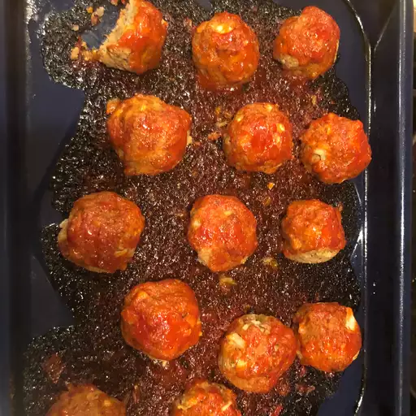

Home
Veg Sweet and Sour Meatballs

My mother first made these vegetarian meatballs for me, and now they’re a staple in my own kitchen—absolutely delicious! Whether served as a main course or an appetizer, they’re always guest and kid approved!
Ingredients
Meatballs
- 4 large eggs
- 1 cup shredded Cheddar cheese
- ½ cup cottage cheese
- ½ cup finely chopped onion
- 1 cup finely chopped pecans
- 1 teaspoon dried basil
- 1 ½ teaspoons salt
- ¼ teaspoon dried sage
- 2 cups Italian seasoned bread crumbs
Sweet and Sour Sauce
- ¼ cup vegetable oil
- ¼ cup white vinegar
- ¾ cup apricot jam
- 1 cup ketchup
- ¼ cup minced onion
- 1 teaspoon dried oregano
- 1 dash hot pepper sauce
Steps
- Preheat the oven to 350 degrees F (175 degrees C).
- For meatballs, combine eggs, Cheddar cheese, and cottage cheese in a bowl and mix until well blended. Add onion, pecans, basil, salt, and sage. Stir in bread crumbs. Roll mixture into 2-inch balls, and place in a 9x13-inch baking dish.
- For the sauce, whisk together the vegetable oil, vinegar, apricot jam, ketchup, onion, oregano, and hot pepper sauce. Pour over meatballs.
- Bake uncovered in the preheated oven until meatballs are firm, and sauce is thick and bubbly, 35 to 40 minutes.